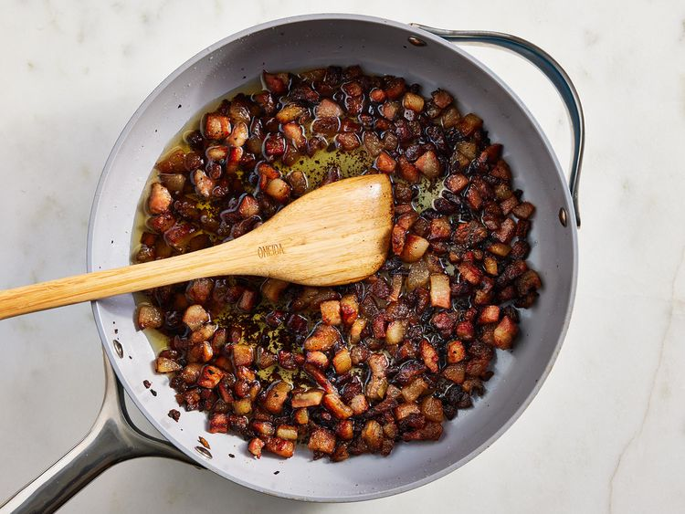
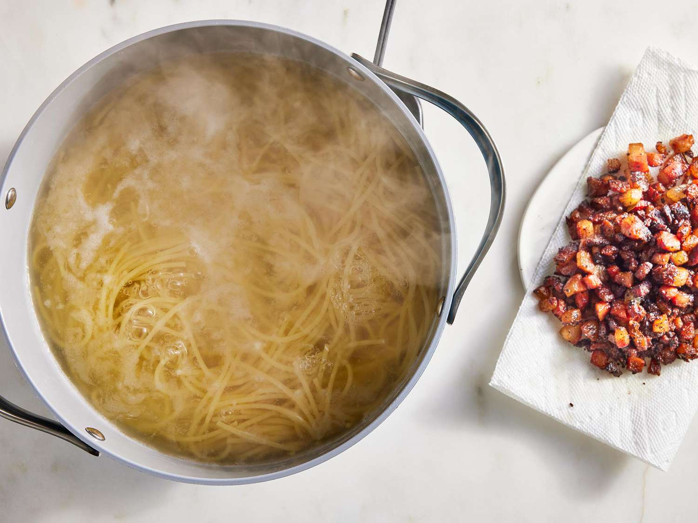
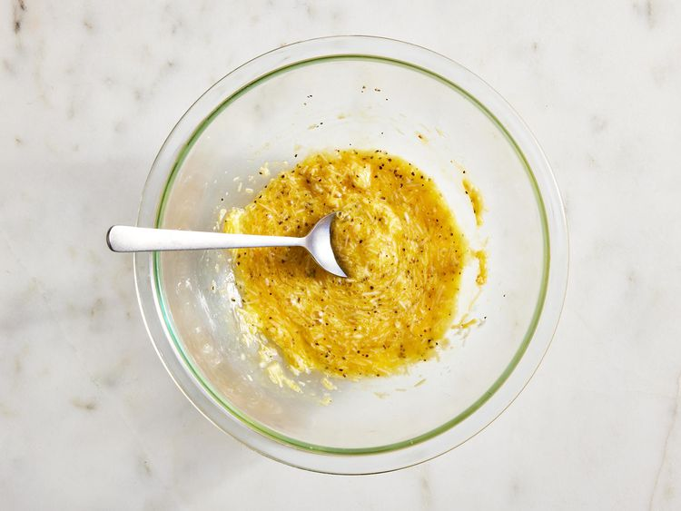
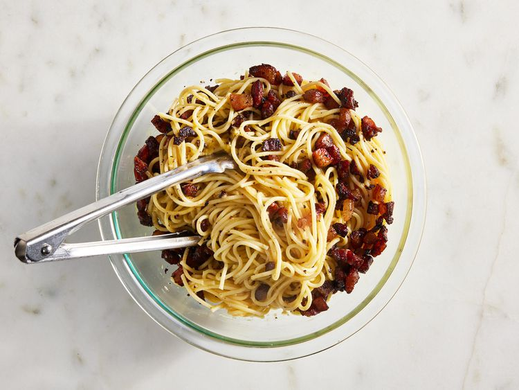

Spaghetti alla Carbonara
Carbonara is made with guanciale (cured pork), eggs, Pecorino Romano
cheese, spaghetti pasta, and lots of black pepper. Italians don't add
extra ingredients like cream, milk, garlic, or onions. Try this recipe if
you want to make an authentic, creamy carbonara that comes straight from
Italy, where I live. Buon appetito!

What Is Spaghetti alla Carbonara?
Carbonara is a Roman dish made with eggs, hard cheese, and cured pork. Its
signature rich and silky sauce comes from beaten eggs tossed with hot
pasta. The trick to making carbonara is making sure the pasta is hot
enough to cook the eggs, but not so hot that they curdle.
Spaghetti alla Carbonara Ingredients
These are the simple ingredients you’ll need to make homemade spaghetti
alla carbonara recipe:
-
Oil: This traditional Italian recipe starts with olive
oil.
-
Guanciale: Buy guanciale (or cured pork cheek) at your
local butcher. If you can't find it, you can substitute unsmoked bacon
or pancetta.
-
Spaghetti: Use store-bought or
homemade spaghetti noodles. If you
like, you can substitute bucatini for the spaghetti.
- Eggs: Three large eggs add richness and flavor.
-
Cheese: Opt for hand-shredded Pecorino Romano cheese.
You can substitute Parmesan, if preferred.
-
Seasonings: This flavorful spaghetti alla carbonara is
simply seasoned with salt and pepper.
How to Make Spaghetti alla Carbonara
You'll find the full, step-by-step recipe below (with photos) — but here's
a brief overview of what you can expect when you make traditional
spaghetti alla carbonara:
-
Cook the pork in olive oil until browned and crispy, then drain on paper
towels.
-
Boil the spaghetti in salted water. Drain and return to the pot. Let
cool.
-
Whisk the eggs, 1/2 of the cheese, and some pepper in a bowl until
smooth.
-
Pour the egg mixture over the pasta, stirring quickly, until creamy.
-
Stir in the pork, then top with the remaining cheese and more black
pepper.
Directions
-
Heat olive oil in a large skillet over medium heat; add guanciale (see
Cook's Note). Cook, turning occasionally, until evenly browned and
crispy, 5 to 10 minutes. Remove from heat and drain on paper towels.

-
Bring a large pot of salted water to a boil. Cook spaghetti in the
boiling water, stirring occasionally until tender yet firm to the bite,
about 9 minutes. Drain and return to the pot. Let cool, stirring
occasionally, about 5 minutes.

-
Whisk eggs, 1/2 of the Pecorino Romano cheese, and some black pepper in
a bowl until smooth and creamy.

-
Pour egg mixture over pasta, stirring quickly, until creamy and slightly
cooled. Stir in guanciale.

- Top with remaining Pecorino Romano cheese and more black pepper.
Odin Recipes